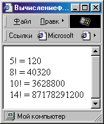

|
|
|
|
6.2. Как писать собственные функции
В примере, приведенном в предыдущем разделе, вы, вероятно, обратили внимание на то, что некоторые строки нашего кода выглядят очень похоже, почти повторяя друг друга. Поскольку при создании динамических веб- страниц нередко действительно приходится проделывать одни и те же дейcтвия с разными элементами, то для сокращения размера кода можно
записать их один раз в самом начале, поставив впереди ключевое слово function, то есть, определив их как функцию.
Описание функции
Давайте рассмотрим такой очень простой пример. Предположим, что на нашей странице время от времени придется вычислять факториал числа. Понятно, что одной строкой здесь не обойтись. Чтобы не писать последовательность строк вычисления прямо в тексте документа, можно оформить его как функцию:
function fct(a)
{ if (<а==0)||(a==l)) return 1;
else { var i=1;
for (a; a>1; a--) i*=a; return i; } }
Как видите, эта функция не делает ничего особенного. Обратите внимание на следующие моменты. Во-первых, функция должна принимать какой-то аргумент (в данном случае число, факториал которого следует вычислить) и возвращать результат. При определении функции аргумент нужно указать в скобках после ее названия. Например, здесь мы написали
function fct(a)
Это означает, что функция будет называться fct() (можно использовать любое незарезервированное сочетание символов), а ее аргумент мы пока условно обозначили “а”.
Далее идет, собственно, “тело” функции, которое должно быть заключено а в фигурные скобки. В первой ее строке
if ((а==0)||(а==1)) return 1;
мы проверяем, не равен ли аргумент 0 или 1, и если это так, то функция возвращает результат — 1. Для возвращения результата применяется one- ратор return,
Если же аргумент не равен 0 или 1, выполняется следующий блок (идущий после ключевого слова else). Здесь мы определяем временную переменную i, в которую будем сохранять промежуточные результаты. Затем организуем цикл, причем в качестве счетчика используем сам аргумент, чтобы не вводить еще одну переменную. Запись i*=a — это просто сокращенная форма записи i=i*a, то есть мы перемножаем значения i и а, присваивая результат переменной i. Кстати, такая сокращенная форма записи существует для всех арифметических и логических операций, то есть можно записать х+=2 вместо х=х+2; z%=y вместо z=z%y и т. д.
Теперь, когда функция написана, ее можно вызвать из любого места. Например, если мы напишем где-нибудь выражение x=fct(5), то переменной х будет присвоено значение факториала от числа 5, то есть 120.
Чтобы не возникло ошибки вызова еще не определенной функции, рекомендуется определять их в разделе <HEAD> своего .HTML-файла. Теперь давайте попробуем проиллюстрировать сказанное.
<!DOCTYPE HTML PUBLIC "-//W3C//DTD HTML 4.0 Transitional//EN">
<HTML>
<HEAD>
<ТITLЕ>Вычисление факториала</ТITLЕ>
<SCRIPT> function fct(a) {
if ((a==0)||(a==l)) return 1;
else
{
var i=l; for (a; a>1; a--) i*=a; return i;
} } </SCRIPT>
</HEAD>
<BODY>
<SCRIPT>
var q; q=prompt ("Введите целое число от 0 до 170", "5");
q=parselnt(q) ;
if (isNaN(q)) alert ("Должно быть введено ЧИСЛО в пределах от 0 до 170");
else if (<q<0)||(q>170)) alert ("Число должно быть в пределах от 0 до 170") ;
else document.write(q+"l = "+fct(q)+"<BR>");
</SCRIPT>
</BODY>
</HTML>
При загрузке этой веб-страницы пользователю будет предложено ввести число в пределах от 0 до 170 поскольку для отрицательных чисел факториал не определен, а для чисел, больших 170, обычным способом вычис лить его не удастся — возникнет переполнение, и интерпретатор JavaScript выдаст в качестве результата ключевое слово Infinity, то есть бесконечность). Затем с помощью функции parselnt() мы выделяем из введенной строки целое число (если это не удается — выдается предупреждающее сообщение). Затем мы проверяем, входит ли это число в “разрешенный” диапазон (от 0 до 170). И, наконец, если все правильно, записываем результат, “попутно” вызывая нашу функцию fct().
Усложненный пример
Теперь давайте несколько усложним задачу. Пусть мы хотим проделать все это несколько раз подряд, чтобы пользователь мог по желанию вычислить несколько разных значений факториала. Для этого нам лучше оформить как функцию все, что мы написали до этого. Назовем эту функцию callit() и поместим в заголовок документа:
function callitO { var q; q=prompt ("Введите целое число от 0 до 170", "5") ;
q=parselnt(q) ; if (isNaN(q)) alert ("Должно быть введено ЧИСЛО в пределах от 0 до 170");
else if ((q<0)|| (q>l70)) alert ("Чиг-ло должно быть в пределах от 0 до 170");
else document .write<q+"! = "+fct(q)+"<BR>");
}
Поскольку, в отличие от предыдущей, эта функция не принимает никаких аргументов, в скобках после ее имени ничего нет, но сами скобки все равно необходимо поставить. Так как результата эта функция тоже не воз вращает, то мы прекрасно обходимся в ней без оператора return.
Теперь мы можем вызывать ее из “тела” документа сколько угодно раз, написав просто callit(). Например, можно организовать цикл для 10-кратного ее вызова:
for (var j=1; j<11; j++) callit();
Можно также организовать бесконечный цикл:
while (true) callit();
Для этого мы использовали оператор условной организации цикла while. Он проверяет условие, которое записано в скобках, и, если оно верно, выполняется действие (или блок действий), указанное после этого оператора.
Так повторяется до тех пор, пока условие не станет неверным. Здесь мы в качестве условия поставили ключевое слово true, которое всегда будет воз вращать значение “истина”. Поэтому цикл получится бесконечным.
Однако хорошо бы сначала спросить мнение пользователя, желает ли он повторения цикла, а то мы так и не позволим ему уйти со своей страницы. Для этого можно воспользоваться методом confirm. Он очень похож на метод alert, однако здесь пользователь имеет возможность нажать одну из двух кнопок (ОК или Отмена). Если нажата кнопка ОК, возвращается значение “истина” (true), если нажата кнопка Отмена, возвращается значение “ложь” (false).
while (confirm ("Повторить?")) callit();
Это уже лучше, но теперь при загрузке страницы пользователь сразу увидит запрос, повторить ли ему что-то, чего он еще не делал. Перед тем как задавать подобные вопросы, неплохо бы хоть один раз наше вычисление произвести. Чтобы цикл выполнялся до проверки условия, можно организовать его по-другому, используя ключевое слово do:
do callit(); while (confirm ("Повторить?"));
Теперь после вычисления каждого факториала пользователь будет иметь возможность выбора: повторить расчет или завершить. При нажатии кнопки Отмена выполняется выход из цикла. После этого можно продолжить загрузку документа (для иллюстрации мы просто подводим горизонталь ную черту под результатами вычислений).
Вот как будет вьглядеть текст этой веб-страницы целиком.
<!DOCTYPE HTML PUBLIC "-//W3C//DTD HTML 4.0 Transitional//EN">
<HTML>
<HEAD>
<TITLE>Вычисление факториала</ТITLЕ>
<SCRIPT> function fct(a) { if ((a=0)| | (a=l)) return 1;
else { var i=l ; for (a; a>l; a--) i*=a; return i; } }
function callit() { var q; q=prompt ("Введите целое число от 0 до 170", "5") ; q=parselnt(q) ; if (isNaN(q)) alert("Должно быть введено ЧИСЛО в пределах от 0 до 170");
else if ( (q<0) | | (q>170) ) alert("Число должно быть в пределах от 0 до 170");
else document.write(q+"! = "+fct(q)+"<BR>");
} </SCRIPT>
</HEAD>
<BODY>
<SCRIPT> do callit() ;
while (confirm ("Повторить?")) ;
document.write("<HR WIDTH=100 ALIGN”'left'>");
</SCRIPT>
</BODY>
</HTML>
Действие этого кода показано на рис. 6.5. Как видите, результат каждого вычисления помещается в окно броузера. Если сейчас нажать кнопку Отмена, под результатами будет проведена горизонтальная черта.

Рис. 6.5. Расчет факториалов и запрос к пользователю
Конечно, появление лишних диалоговых окон в некоторых случаях может отпугнуть пользователя, особенно если у него на полную громкость вклю чены звуковые колонки (вывод окон alert и confirm обычно сопровождается стандартными звуками Windows). Поэтому лучше бы воздерживаться от их применения. Вместо этого можно использовать динамическое измене ния содержимого страницы.
Указание языка сценариев
Прежде чем пойти далее, давайте рассмотрим еще вот какой вопрос. Дело в том, что тег <SCRIPT> , так же как и другие теги, может иметь свои атри буты. Это LANGUAGE= (язык) и TYPE= (тип). В первом указывается язык, на котором написан сценарий. По умолчанию, значением этого атрибута явля ется JavaScript, так что если вы пишете обычный JavaScript-сценарий, то можете спокойно не указывать этот атрибут. Однако, если вы используете особенности версий 1.1 или 1.2 этого языка, то это необходимо указать:
<SCRIPT LANGUAGE”"JavaScript1.1">
ИЛИ
<SCRIPT LANGUAGE""JavaScript1.2">
Правда, распознать это смогут только броузеры Netscape последних версий. А если вы пишете страницу для отображения в броузере Internet Explorer, то можете использовать вообще другой язык — VBScript. Для этого необходимо указать соответствующее значение атрибута LANGUAGE=:
<SCRIPT LANGUAGE="VBS">
ИЛИ
<SCRIPT LANGUAGE="VBScript">
что, вообще говоря, одно и то же. В отдельных случаях могут применяться другие языки, для чего определены такие значения атрибута LANGUAGE=, как LiveScript, tal, PHP и другие.
Что касается атрибута TYPE=, то в нем можно на всякий случай указать тип сценария. В большинстве случаев это text/javascript (или text/vbscript для сценариев, написанных на VBScript).
|
|
|
|